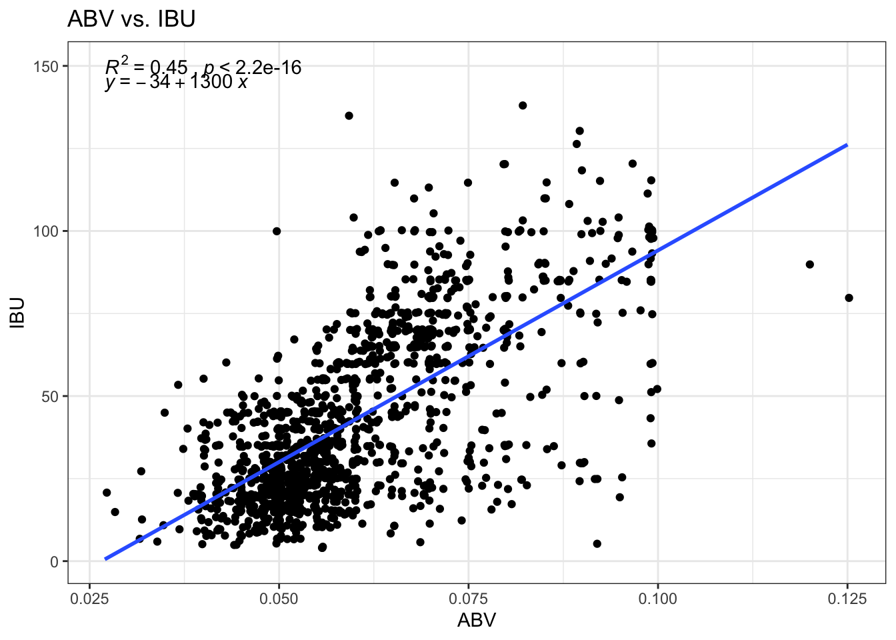

Case Study 1 by Data Junkies
Team Data Junkies - Chris Roche, Puri Rudick, and Ryan Kinney
The study of beers and breweries in the United States was conducted using over 2000 beers from more than 500 breweries.
Some of the focuses of this exploratory data analysis were placed on International Bitterness Units (IBU), Alcohol by volume (ABV), and regional differences with respect to states.
This analysis is useful for Budweiser future business decision.
Read in the data from csv files
beerDataOrig = read.csv("Beers.csv",header = TRUE)
breweryDataOrig = read.csv("Breweries.csv",header = TRUE)1. How many breweries are present in each state?
The number of breweries in each state as shown below. The darker color represents the higher number of breweries with number labeled.
The plot shows that Colorado has the most breweries in the country, which is 47 breweries.
breweryDataOrig = as.data.frame(breweryDataOrig)
Breweries.in.each.state = breweryDataOrig %>% group_by(State) %>% tally()
names(Breweries.in.each.state)[1] <- "state"
Breweries.in.each.state$state <-
str_replace_all(string=Breweries.in.each.state$state,
pattern=" ", repl="")
centroid_labels <-
utils::read.csv(system.file("extdata",
paste0("us_", "states", "_centroids.csv"),
package = "usmap"), stringsAsFactors = FALSE)
labels <-
merge(x = centroid_labels,
y = Breweries.in.each.state,
by.x = "abbr",
by.y = "state",
all.x=TRUE)
names(labels)[6] <- "breweries_count"
plot_usmap(data = Breweries.in.each.state, values = "n", labels=FALSE) +
scale_fill_continuous(low = "white",
high = "orange",
name = "# of Breweries",
label = scales::comma) +
theme(legend.position = "right") +
theme(panel.background = element_rect(colour = "black")) +
labs(title = "Number of Breweries by State") +
geom_text(data = labels,
ggplot2::aes(x = x, y = y,
label = scales::number(breweries_count,accuracy = 1)),
color = "black")Quick Facts:
- Colorado has the most breweries with 47
- West Virginia, North Dakota, and South Dakota each have one brewery
- Missouri (the home of Anheuser-Busch & Budweiser) has 9 breweries (Ranks 20th)
2. Merge beer data with the breweries data. Print the first 6 observations and the last six observations to check the merged file.
Beer and breweries data are merged using Brewery_ID as an index.
Below are first and last six observations on the merged beer dataset.
mergedBeerData <- merge(x = beerDataOrig, y = breweryDataOrig,
by.x = "Brewery_id", by.y = "Brew_ID", all = TRUE)
names(mergedBeerData)[names(mergedBeerData)=="Name.x"] <- "Beer_name"
names(mergedBeerData)[names(mergedBeerData)=="Name.y"] <- "Brewery_name"
head(mergedBeerData)## Brewery_id Beer_name Beer_ID ABV IBU
## 1 1 Get Together 2692 0.045 50
## 2 1 Maggie's Leap 2691 0.049 26
## 3 1 Wall's End 2690 0.048 19
## 4 1 Pumpion 2689 0.060 38
## 5 1 Stronghold 2688 0.060 25
## 6 1 Parapet ESB 2687 0.056 47
## Style Ounces Brewery_name City
## 1 American IPA 16 NorthGate Brewing Minneapolis
## 2 Milk / Sweet Stout 16 NorthGate Brewing Minneapolis
## 3 English Brown Ale 16 NorthGate Brewing Minneapolis
## 4 Pumpkin Ale 16 NorthGate Brewing Minneapolis
## 5 American Porter 16 NorthGate Brewing Minneapolis
## 6 Extra Special / Strong Bitter (ESB) 16 NorthGate Brewing Minneapolis
## State
## 1 MN
## 2 MN
## 3 MN
## 4 MN
## 5 MN
## 6 MNtail(mergedBeerData)## Brewery_id Beer_name Beer_ID ABV IBU
## 2405 556 Pilsner Ukiah 98 0.055 NA
## 2406 557 Heinnieweisse Weissebier 52 0.049 NA
## 2407 557 Snapperhead IPA 51 0.068 NA
## 2408 557 Moo Thunder Stout 50 0.049 NA
## 2409 557 Porkslap Pale Ale 49 0.043 NA
## 2410 558 Urban Wilderness Pale Ale 30 0.049 NA
## Style Ounces Brewery_name City
## 2405 German Pilsener 12 Ukiah Brewing Company Ukiah
## 2406 Hefeweizen 12 Butternuts Beer and Ale Garrattsville
## 2407 American IPA 12 Butternuts Beer and Ale Garrattsville
## 2408 Milk / Sweet Stout 12 Butternuts Beer and Ale Garrattsville
## 2409 American Pale Ale (APA) 12 Butternuts Beer and Ale Garrattsville
## 2410 English Pale Ale 12 Sleeping Lady Brewing Company Anchorage
## State
## 2405 CA
## 2406 NY
## 2407 NY
## 2408 NY
## 2409 NY
## 2410 AK3. Address the missing values in each column.
There are missing/empty values in three columns:
- ABV: 62 values missing
- IBU: 1,005 values missing, and
- Sty: 5 values missing
Totaling in 1,007 rows with missing value.
mergedBeerData$Style <-
lapply(mergedBeerData$Style,
function(x) if(identical(x,"")) NA else x)
sapply(mergedBeerData, function(x) sum(is.na(x)))## Brewery_id Beer_name Beer_ID ABV IBU Style
## 0 0 0 62 1005 5
## Ounces Brewery_name City State
## 0 0 0 0row.has.na <- apply(mergedBeerData, 1, function(x){any(is.na(x))})
sum(row.has.na)## [1] 1007After filtering the missing/empty values out of the merged beer dataset, there are 1,405 rows of data in total that we work with.
# Filtered Merged Data
mergedBeerData.filtered <- mergedBeerData[!row.has.na,]
nrow(mergedBeerData.filtered)## [1] 1403mergedBeerData.ABV_filtered = mergedBeerData %>% filter(!is.na(ABV))
nrow(mergedBeerData.ABV_filtered)## [1] 2348mergedBeerData.IBU_filtered = mergedBeerData %>% filter(!is.na(IBU))
nrow(mergedBeerData.IBU_filtered)## [1] 14054.Compute the median alcohol content and international bitterness unit for each state. Plot a bar chart to compare.
The median of Alcohol By Volume (ABV) and International Bitterness Units (IBU) for each state as shown below.
From the bar charts, Maine has the highest number for both ABV (0.067 or 6.7%) and IBU (61 unit).
# All rows NA filtered data
medianData <- aggregate(mergedBeerData.filtered[, 4:5],
list(mergedBeerData.filtered$State), median)
names(medianData)[names(medianData)=="Group.1"] <- "State"
# All ABV NA rows filtered
median.ABV <- aggregate(mergedBeerData.ABV_filtered[, 4],
list(mergedBeerData.ABV_filtered$State), median)
names(median.ABV)[names(median.ABV)=="Group.1"] <- "State"
names(median.ABV)[names(median.ABV)=="x"] <- "ABV"
# All IBU NA rows filtered
median.IBU <- aggregate(mergedBeerData.IBU_filtered[, 5],
list(mergedBeerData.IBU_filtered$State), median)
names(median.IBU)[names(median.IBU)=="Group.1"] <- "State"
names(median.IBU)[names(median.IBU)=="x"] <- "IBU"
# Merged data for ABV NA rows filtered and IBU NA rows filtered
median.ABV.IBU_filtered <- merge(x = median.ABV, y = median.IBU,
by = "State", all = TRUE)
median.ABV.IBU_filtered$IBU[is.na(median.ABV.IBU_filtered$IBU)] <- 0
g.mid <- ggplot(median.ABV.IBU_filtered,aes(x=1, y = reorder(State,ABV))) +
geom_text(aes(label=State)) +
geom_segment(aes(x=0.94,xend=0.96,yend=State)) +
geom_segment(aes(x=1.04,xend=1.062,yend=State)) +
ggtitle("") +
ylab(NULL) +
scale_x_continuous(expand=c(0,0),limits=c(0.94,1.062)) +
theme(axis.title=element_blank(),
panel.grid=element_blank(),
axis.text.y=element_blank(),
axis.ticks.y=element_blank(),
panel.background=element_blank(),
axis.text.x=element_text(color=NA),
axis.ticks.x=element_line(color=NA),
plot.margin = unit(c(1,-1,1,-1), "mm"))
g1 <- ggplot(data = median.ABV.IBU_filtered, aes(x = reorder(State,ABV), y = ABV, label = ABV)) +
geom_bar(stat = "identity", fill = "sandybrown") +
ggtitle("Alcohol By Volume (ABV)") +
geom_text(aes(y = ABV+0.004),
size = 3,
vjust = .5) +
theme(panel.background = element_blank(),
axis.title.x = element_blank(),
axis.text.x=element_text(color=NA),
axis.ticks.x=element_line(color=NA),
axis.title.y = element_blank(),
axis.text.y = element_blank(),
axis.ticks.y = element_blank(),
legend.position = "none",
plot.title = element_text(hjust = 1),
plot.margin = unit(c(1,0,1,0), "mm")) +
scale_y_reverse() +
coord_flip(ylim = c(0.075,0.03))
g2 <- ggplot(data = median.ABV.IBU_filtered, aes(x = reorder(State,ABV), y = IBU, fill = IBU, label=ifelse(IBU < 1, "NA", IBU))) +
xlab(NULL) +
geom_bar(stat = "identity") +
ggtitle("International Bitterness Units (IBU)") +
geom_text(aes(y = IBU+4),
size = 3,
vjust = .5) +
scale_fill_gradient2(low = "grey25",
high = "black",
name = "IBU") +
theme(panel.background = element_blank(),
axis.title.x = element_blank(),
axis.text.x=element_text(color=NA),
axis.ticks.x=element_line(color=NA),
axis.title.y = element_blank(),
axis.text.y = element_blank(),
axis.ticks.y = element_blank(),
legend.position = "none",
plot.margin = unit(c(1,5,1,0), "mm")) +
coord_flip(ylim = c(0,65))
gg1 <- ggplot_gtable(ggplot_build(g1))
gg2 <- ggplot_gtable(ggplot_build(g2))
gg.mid <- ggplot_gtable(ggplot_build(g.mid))
grid.arrange(gg1,gg.mid,gg2,ncol=3,widths=c(4/9,1/9,4/9))Combined the two bar charts together with radial stacked bar chart.
median.ABV.IBU_filtered %>%
ggplot(aes(x = reorder(State,ABV))) +
geom_col(aes(y = ABV*1000, fill = ABV*100)) +
scale_fill_gradient2(low = "white",
high = "orange",
name = "Median ABV") +
geom_text(aes(y = ABV*1000-8, label = round(ABV*100, 3)), color = "chocolate4", size = 3) +
new_scale_fill() +
geom_col(aes(y = -IBU, fill = IBU)) +
scale_fill_gradient2(low = "grey25",
high = "black",
name = "Median IBU") +
geom_text(aes(y = -6, label = round(IBU, 0)), color = "white", size = 3) +
geom_text(aes(y = ABV*1000+10, label = State)) +
scale_y_continuous(limits = c(-70, 80)) +
coord_polar() +
theme_void() +
labs(title = "Median of Alcohol By Volume (ABV) and\nInternational Bitterness Units (IBU) for Each State",
subtitle = " * The bar chart ordered clockwise by median ABV value\n ** The darker color represents higher value of median ABV and IBU")5. Which state has the maximum alcoholic (ABV) beer? Which state has the most bitter (IBU) beer?
On average: - Colorado and Kentucky has the most alcoholic (6.25%) - Maine has the most bitter beer (61 IBU)
# arrange by ABV in descending order, print state for first observation
# arrange by ABV in descending order, print state for first observation
median.ABV.IBU_filtered$ABV.rank <- dense_rank(-median.ABV.IBU_filtered$ABV)
with(median.ABV.IBU_filtered,
median.ABV.IBU_filtered$State[median.ABV.IBU_filtered$ABV.rank == 1])## [1] " DC" " KY"median.ABV.IBU_filtered$IBU.rank <- dense_rank(-median.ABV.IBU_filtered$IBU)
with(median.ABV.IBU_filtered,
median.ABV.IBU_filtered$State[median.ABV.IBU_filtered$IBU.rank == 1])## [1] " ME"By individual beers: - Colorado has the highest ABV beer at 12.8%, Lee Hill Series Vol. 5 by Upslope Brewing Company - Oregon has the most bitter beer at an IBU of 138, Bitter B**** Imperial IPA by Astoria Brewing Company
# arrange by ABV in descending order, print state for first observation
mergedBeerData$ABV.rank <- dense_rank(-mergedBeerData$ABV)
filter(mergedBeerData,ABV.rank == 1)## Brewery_id Beer_name Beer_ID ABV
## 1 52 Lee Hill Series Vol. 5 - Belgian Style Quadrupel Ale 2565 0.128
## IBU Style Ounces Brewery_name City State ABV.rank
## 1 NA Quadrupel (Quad) 19.2 Upslope Brewing Company Boulder CO 1mergedBeerData$IBU.rank <- dense_rank(-mergedBeerData$IBU)
filter(mergedBeerData,IBU.rank == 1)## Brewery_id Beer_name Beer_ID ABV IBU
## 1 375 Bitter Bitch Imperial IPA 980 0.082 138
## Style Ounces Brewery_name City State
## 1 American Double / Imperial IPA 12 Astoria Brewing Company Astoria OR
## ABV.rank IBU.rank
## 1 23 17. Is there an apparent relationship between the bitterness of the beer and its alcoholic content? Draw a scatter plot.
From the scatter plot with a regression line, there is a positive correlation between a beer’s ABV and its IBU. There is strong evidence at the alpha = .05 level of significance to suggest that there is a linearly correlated relationship between a beer’s ABV and its IBU (p-value <.0001), with Pearson’s Correlation Coefficient = 0.67 and r-square = 0.45.
mergedBeerData.filtered %>%
ggplot(aes(x = ABV,y = IBU)) +
geom_jitter() +
ggtitle("ABV vs. IBU") +
geom_smooth(method="lm", se=F) +
stat_cor(label.y = 150,
aes(label = paste(..rr.label..,
..p.label..,
sep = "~`,`~"))) +
stat_regline_equation(label.y = 145) +
theme_bw()
cor.test(mergedBeerData.filtered$ABV,mergedBeerData.filtered$IBU)##
## Pearson's product-moment correlation
##
## data: mergedBeerData.filtered$ABV and mergedBeerData.filtered$IBU
## t = 33.848, df = 1401, p-value < 2.2e-16
## alternative hypothesis: true correlation is not equal to 0
## 95 percent confidence interval:
## 0.6408842 0.6985369
## sample estimates:
## cor
## 0.67072248. Use KNN classification to investigate the relationship between IBU and ABV in Ales and IPAs.
Key results of the Confusion Matrix:
- Accuracy : 0.8232
- 95% CI : (0.7597, 0.8758)
- Sensitivity : 0.8558
- Specificity : 0.7792
mergedBeerData.filtered$AleStyle <-
ifelse(grepl("IPA", mergedBeerData.filtered$Style, fixed = TRUE),"IPA",
ifelse(grepl("Ale", mergedBeerData.filtered$Style, fixed = TRUE),"Ale","Other"))
mergedBeerData.filtered$AleByName <-
ifelse(grepl("India Pale Ale", mergedBeerData.filtered$Beer_name, fixed = TRUE),"IPA",
ifelse(grepl("IPA", mergedBeerData.filtered$Beer_name, fixed = TRUE),"IPA",
ifelse(grepl("Ale", mergedBeerData.filtered$Beer_name, fixed = TRUE),"Ale","Other")))
aleBeerFiltered <- mergedBeerData.filtered %>% filter(AleByName == "IPA" | AleByName == "Ale")
set.seed(4)
splitPerc = .7
trainIndices = sample(1:dim(aleBeerFiltered)[1], round(splitPerc * dim(aleBeerFiltered)[1]))
beerTrain = aleBeerFiltered[trainIndices,]
beerTest = aleBeerFiltered[-trainIndices,]
# run knn
classifications = knn(beerTrain[,4:5], beerTest[,4:5], beerTrain$AleByName, k = 5, prob = TRUE)
summary(classifications)## Ale IPA
## 104 77# Confusion Matrix
table(beerTest$AleByName, classifications)## classifications
## Ale IPA
## Ale 89 17
## IPA 15 60CM = confusionMatrix(table(beerTest$AleByName, classifications))
CM## Confusion Matrix and Statistics
##
## classifications
## Ale IPA
## Ale 89 17
## IPA 15 60
##
## Accuracy : 0.8232
## 95% CI : (0.7597, 0.8758)
## No Information Rate : 0.5746
## P-Value [Acc > NIR] : 9.345e-13
##
## Kappa : 0.6371
##
## Mcnemar's Test P-Value : 0.8597
##
## Sensitivity : 0.8558
## Specificity : 0.7792
## Pos Pred Value : 0.8396
## Neg Pred Value : 0.8000
## Prevalence : 0.5746
## Detection Rate : 0.4917
## Detection Prevalence : 0.5856
## Balanced Accuracy : 0.8175
##
## 'Positive' Class : Ale
## 9. More useful information: Expanding KNN to detect non-Ale or IPA (other) beers.
set.seed(4)
splitPerc = .7
trainIndices.allType = sample(1:dim(mergedBeerData.filtered)[1], round(splitPerc * dim(mergedBeerData.filtered)[1]))
beerTrain.allType = mergedBeerData.filtered[trainIndices.allType,]
beerTest.allType = mergedBeerData.filtered[-trainIndices.allType,]
# run knn
classifications = knn(beerTrain.allType[,4:5], beerTest.allType[,4:5], beerTrain.allType$AleByName, k = 5, prob = TRUE)
summary(classifications)## Ale IPA Other
## 83 79 259# Confusion Matrix
table(beerTest.allType$AleByName, classifications)## classifications
## Ale IPA Other
## Ale 30 6 67
## IPA 9 44 30
## Other 44 29 162CM.allType = confusionMatrix(table(beerTest.allType$AleByName, classifications))
CM.allType## Confusion Matrix and Statistics
##
## classifications
## Ale IPA Other
## Ale 30 6 67
## IPA 9 44 30
## Other 44 29 162
##
## Overall Statistics
##
## Accuracy : 0.5606
## 95% CI : (0.5117, 0.6086)
## No Information Rate : 0.6152
## P-Value [Acc > NIR] : 0.9903
##
## Kappa : 0.2309
##
## Mcnemar's Test P-Value : 0.1458
##
## Statistics by Class:
##
## Class: Ale Class: IPA Class: Other
## Sensitivity 0.36145 0.5570 0.6255
## Specificity 0.78402 0.8860 0.5494
## Pos Pred Value 0.29126 0.5301 0.6894
## Neg Pred Value 0.83333 0.8964 0.4785
## Prevalence 0.19715 0.1876 0.6152
## Detection Rate 0.07126 0.1045 0.3848
## Detection Prevalence 0.24466 0.1971 0.5582
## Balanced Accuracy 0.57273 0.7215 0.58749. More useful information: Median IBU by State
median.ABV.IBU_filtered = as.data.frame(median.ABV.IBU_filtered)
names(median.ABV.IBU_filtered)[1] <- "state"
median.ABV.IBU_filtered$state <-
str_replace_all(string=median.ABV.IBU_filtered$state,
pattern=" ", repl="")
centroid_labels <-
utils::read.csv(system.file("extdata",
paste0("us_", "states", "_centroids.csv"),
package = "usmap"), stringsAsFactors = FALSE)
labels <-
merge(x = centroid_labels,
y = median.ABV.IBU_filtered,
by.x = "abbr",
by.y = "state",
all.x=TRUE)
plot_usmap(data = median.ABV.IBU_filtered, values = "IBU", labels=FALSE) +
scale_fill_continuous(low = "white",
high = "darkgreen",
name = "Median IBU",
label = scales::comma) +
theme(legend.position = "right") +
theme(panel.background = element_rect(colour = "black")) +
labs(title = "Median IBU by State")Observation: There is a popular style of beer called a “West Coast IPA”, but the West Coast does not have more bitter beer than other regions on average.
9. More useful information: Median ABV by State
plot_usmap(data = median.ABV.IBU_filtered, values = "ABV", labels=FALSE) +
scale_fill_continuous(low = "white",
high = "darkblue",
name = "Median ABV",
label = scales::comma) +
theme(legend.position = "right") +
theme(panel.background = element_rect(colour = "black")) +
labs(title = "Median ABV by State")
Observation: Utah and Arkansas had laws until 2020 limiting the alcohol content of beer.
9. More useful information: Beer Size (Ounces) by State
There are 9 states that the biggest beer container size is only 12 ounces - Alaska - Alabama - Arkansas - DC - Georgia - North Dakota - South Dakota - Tennessee - West Virginia
It might be a good opportunity for Budweiser to launch a bigger size product in these states.
max.size <- aggregate(mergedBeerData[, 7],
list(mergedBeerData$State), max)
names(max.size)[names(max.size)=="Group.1"] <- "state"
names(max.size)[names(max.size)=="x"] <- "max.Ounces"
max.size$max.bin = cut(max.size$max.Ounces,
breaks = c(0,11,12,16,32),
labels = c("< 12 Ounces","12 Ounces","16 Ounce", ">16 Ounce"))
filter(max.size,max.bin == "12 Ounces")## state max.Ounces max.bin
## 1 AK 12 12 Ounces
## 2 AL 12 12 Ounces
## 3 AR 12 12 Ounces
## 4 DC 12 12 Ounces
## 5 GA 12 12 Ounces
## 6 ND 12 12 Ounces
## 7 SD 12 12 Ounces
## 8 TN 12 12 Ounces
## 9 WV 12 12 Ouncesmax.size$state <-
str_replace_all(string=max.size$state,
pattern=" ", repl="")
centroid_labels <-
utils::read.csv(system.file("extdata",
paste0("us_", "states", "_centroids.csv"),
package = "usmap"), stringsAsFactors = FALSE)
labels <-
merge(x = centroid_labels,
y = max.size,
by.x = "abbr",
by.y = "state",
all.x=TRUE)
plot_usmap(data = max.size, values = "max.bin", labels=TRUE) +
scale_fill_manual(values = c("white", "skyblue1", "skyblue4"),
name = "Max Container Size") +
theme(legend.position = "right") +
theme(panel.background = element_rect(colour = "black"),
legend.text = element_text(size = 10)) +
labs(title = "Maximum Beer Container Size by State")
6. Comment on the summary statistics and distribution of the ABV variable.